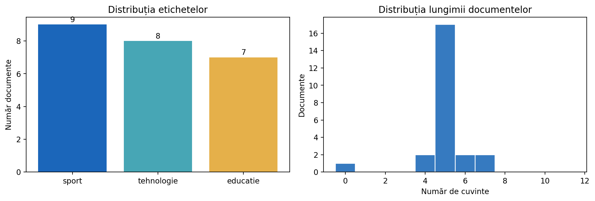
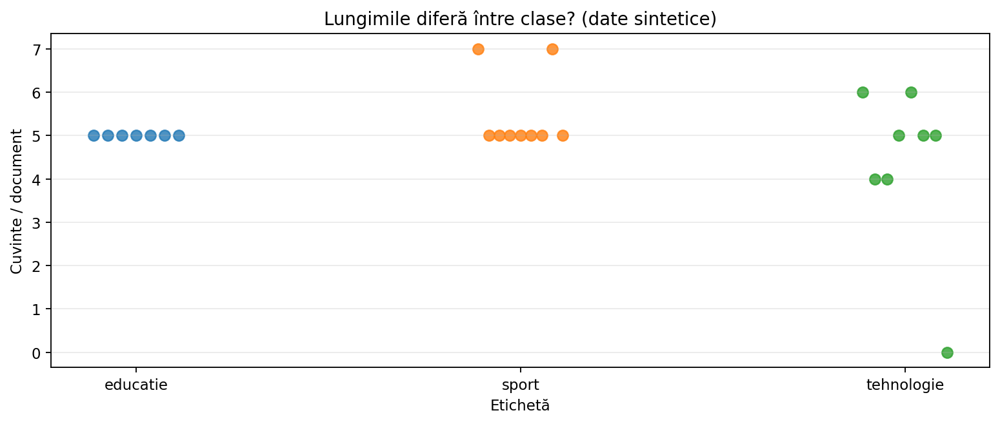
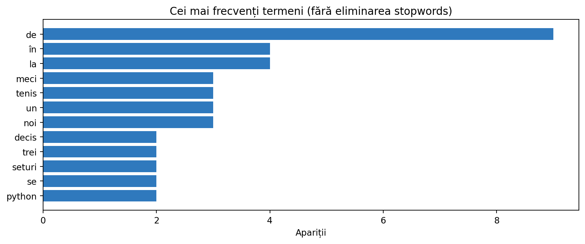

Încărcarea și explorarea corpusurilor
Un proiect NLP începe cu înțelegerea datelor: cum citim texte din surse diferite, ce erori pot apărea și ce statistici trebuie calculate înainte de construirea unui model. Parcurgem un corpus de știri sintetice, cu exemple complete și rezultate verificabile.
Ce vom învăța
La final vei putea identifica schema unui corpus, citi corect documentele, detecta valori lipsă și duplicate, calcula statistici descriptive și crea grafice, evita pierderile de informație și pregăti un set de antrenare fără a contamina validarea.
Ce este un corpus și cum îl reprezentăm?
Un corpus este o colecție de documente. Un document poate fi un e-mail, o recenzie, o știre, un mesaj sau o propoziție. Pentru învățarea supervizată, fiecare document poate avea o etichetă y care indică răspunsul așteptat. Pentru învățarea nesupervizată, eticheta poate lipsi.
În practică, un corpus este deseori un tabel: fiecare rând reprezintă un document, iar coloanele conțin id, text, eticheta, sursa și eventual data sau limba. ID-ul nu este conținutul documentului; el trebuie păstrat ca identificator, nu inclus automat în caracteristicile modelului.
În exemplele următoare folosim un corpus educațional cu știri din trei domenii: sport, tehnologie și educație. Sunt introduse deliberat câteva situații problematice: text lipsă, duplicat și etichetă contradictorie. Astfel exersăm decizii reale de pregătire a datelor.
| ID | Text | Etichetă | Sursă |
|---|---|---|---|
| 101 | Meci de tenis decis în trei seturi | sport | redactie-A |
| 108 | Python este folosit la analiza datelor | tehnologie | redactie-A |
| 115 | Elevii rezolvă probleme la matematică | educație | redactie-C |
| 123 | lipsă | tehnologie | redactie-A |
Nu trata lipsurile, duplicatele și valorile atipice fără să explici de ce le elimini sau cum le modifici. Alegerea poate schimba distribuția claselor și performanța evaluării.
Citirea fișierelor TXT: un document pe linie sau un fișier per document
Cel mai simplu format este .txt, dar trebuie stabilită convenția: o linie = un document sau un fișier = un document. Dacă un document poate conține mai multe paragrafe, despărțirea după \n poate fi greșită.
Folosim encoding="utf-8" pentru caracterele românești. strip() elimină spații la începutul și sfârșitul liniei, iar if linie poate exclude liniile goale. Totuși, înainte de a le elimina, este util să le numărăm: ele pot semnala o problemă în generarea fișierului.
Exemplul 1. Citim un TXT și numărăm liniile goale
from pathlib import Path fisier = Path("datasets/nlp-corpus-documente.txt") with fisier.open("r", encoding="utf-8") as f: linii = f.readlines() texte = [linie.strip() for linie in linii] goale = sum(text == "" for text in texte) documente = [text for text in texte if text] print("Linii:", len(linii), "Goale:", goale) print("Documente valide:", documente)
Fișierul necesar este inclus în arhivă. Linia goală este detectată înainte de filtrare.
Exemplul 2. Un fișier per document
from pathlib import Path # Exemplu autonom: creăm un director temporar cu două texte. from tempfile import TemporaryDirectory with TemporaryDirectory() as director: folder = Path(director) (folder / "doc1.txt").write_text("Sport și tenis", encoding="utf-8") (folder / "doc2.txt").write_text("Algoritmi și date", encoding="utf-8") corpus = [] for fisier in sorted(folder.glob("*.txt")): corpus.append({"id": fisier.stem, "text": fisier.read_text(encoding="utf-8")}) print(corpus)
sorted() dă o ordine reproductibilă a fișierelor; stem păstrează numele fără extensie.
CSV: coloane, delimitatori, câmpuri între ghilimele
CSV este frecvent în competiții deoarece poate păstra textul și etichetele împreună. Un rând poate conține o virgulă în interiorul textului, de exemplu "Felicitări, ai câștigat!". De aceea nu separăm o linie CSV prin split(","), fiindcă am obține prea multe coloane.
Modulul standard csv știe să interpreteze ghilimelele, delimitatorii și rândurile. Pandas oferă o variantă mai comodă pentru corpusuri mari și analize. Unele fișiere folosesc ; în loc de , — trebuie citit separatorul corect.
La citire, un identificator ca 00123 trebuie să rămână text, pentru a nu pierde zerourile inițiale. Nu deduce niciodată că un id este o caracteristică utilă doar pentru că poate fi convertit la număr.
Exemplul 3. CSV din biblioteca standard (ghilimele corecte)
import csv from io import StringIO continut = 'id,text,eticheta\n001,"Felicitări, ai câștigat!",spam\n002,"Salut, Ana!",legitim\n' f = StringIO(continut) for rand in csv.DictReader(f): print(rand["id"], rand["text"], rand["eticheta"])
Exemplul 4. Citire Pandas cu tipuri explicite
import pandas as pd df = pd.read_csv( "datasets/nlp-corpus-train.csv", encoding="utf-8", dtype={"id": "string", "text": "string", "eticheta": "string"}, usecols=["id", "text", "eticheta", "sursa"] ) print(df.head(4).to_string(index=False)) print("Dimensiune:", df.shape) print("Tipuri:", df.dtypes.to_dict())
dtype previne interpretarea ID-urilor ca valori numerice; tipul string păstrează și valorile lipsă distincte.
Parametru read_csv() | Ce face / când îl folosim |
|---|---|
sep="," / sep=";" | Separatorul câmpurilor: trebuie să corespundă fișierului. |
encoding="utf-8" | Decodifică diacriticele; la unele exporturi se poate utiliza utf-8-sig. |
dtype={"id":"string"} | Păstrează ID-urile și zerourile inițiale. |
usecols=[...] | Citește doar coloanele necesare. |
na_values=[...] | Adaugă marcaje suplimentare pentru valori lipsă. |
keep_default_na=False | Nu mai tratează automat marcajele implicite ca lipsă; necesită atenție. |
nrows=1000 | Inspectează rapid primele documente. |
chunksize=10000 | Parcurge incremental un fișier mare. |
on_bad_lines="error" | Implicit semnalează rânduri invalide; mai sigur decât a le ignora neobservat. |
Când schimbi keep_default_na, semnificația unui text literal precum „NA” se poate modifica. Un corpus de recenzii poate avea chiar documentul „NA”; o verificare manuală a valorilor lipsă este indispensabilă.
JSON și JSON Lines (JSONL): obiecte și metadate imbricate
JSON este util când documentul are câmpuri suplimentare: titlu, text, categorie, autor, dată, metadate. Un fișier JSON poate conține o listă de obiecte sau un obiect care include lista într-o cheie.
JSONL reprezintă câte un obiect JSON pe linie. Este comod pentru corpusuri mari deoarece putem citi progresiv documentele fără să încărcăm o listă JSON uriașă. Pentru câmpuri imbricate folosim pandas.json_normalize().
Exemplul 5. JSON clasic și câmpuri nested
import json import pandas as pd raw = '[{"id": "01", "text": "Meci de tenis", "meta": {"sursa": "redactie-A"}}, {"id": "02", "text": "Cod Python", "meta": {"sursa": "redactie-B"}}]' documente = json.loads(raw) df = pd.json_normalize(documente) print(df[["id", "text", "meta.sursa"]].to_string(index=False))
Exemplul 6. Citim câte un document JSON pe linie
import json from pathlib import Path docuri = [] cale = Path("datasets/nlp-corpus-documente.jsonl") with cale.open(encoding="utf-8") as f: for numar_linie, linie in enumerate(f, start=1): if not linie.strip(): continue obiect = json.loads(linie) docuri.append((obiect["id"], obiect["text"])) print("Documente citite:", len(docuri)) print("Primul:", docuri[0])
Dacă o linie JSONL este invalidă, json.loads() ridică o eroare. Într-un proiect real o tratăm și raportăm numărul liniei.
Explorarea inițială cu Pandas: primele verificări
Înainte de orice model, verificăm câte rânduri există, ce coloane avem, cum arată câteva exemple și ce tipuri de date au fost inferate. df.head() oferă o privire rapidă; df.info() indică tipurile și valorile nevide; df.isna().sum() raportează lipsurile.
O capcană importantă: dacă executăm astype(str) pe o coloană care conține NaN, putem transforma lipsa într-un șir literal "nan". Este mai bine să verificăm mai întâi lipsurile și apoi să aplicăm explicit politica dorită.
Exemplul 7. Auditul unui corpus
import pandas as pd df = pd.read_csv("datasets/nlp-corpus-train.csv", dtype={"id": "string"}) print("Rânduri/coloane:", df.shape) print("Coloane:", df.columns.tolist()) print("Lipsuri pe coloană:\n", df.isna().sum()) print("ID-uri unice:", df["id"].is_unique) print("Etichete:\n", df["eticheta"].value_counts()) print("Primele 3:\n", df.head(3).to_string(index=False))
| Întrebare de verificat | Comandă Pandas |
|---|---|
| Câte observații am? | len(df) sau df.shape |
| Câte valori lipsesc? | df.isna().sum() |
| ID-urile sunt unice? | df["id"].is_unique |
| Ce tipuri de valori? | df.dtypes / df.info() |
| Distribuția claselor? | df["eticheta"].value_counts() |
| Statistici pe coloane? | df.describe(include="all") |
Documente vide, valori lipsă și tipuri incorecte
Un document lipsă și un document gol sunt situații diferite. O celulă lipsă poate fi interpretată ca NaN; un text cu doar spații este prezent ca șir, dar nu conține cuvinte. Ambele trebuie detectate. Dacă lipsește eticheta la antrenare, exemplul nu poate fi folosit direct într-o problemă supervizată.
Uneori păstrăm documentele goale ca parte din test, pentru că predicțiile trebuie să corespundă tuturor ID-urilor. În antrenare le putem elimina dacă sarcina și regulamentul permit; dacă le păstrăm, trebuie verificat cum se comportă vectorizatorul și clasificatorul.
Exemplul 8. Politică explicită pentru documente vide
import pandas as pd df = pd.read_csv("datasets/nlp-corpus-train.csv") serie = df["text"].astype("string") lipsa = serie.isna() gol = serie.fillna("").str.strip().eq("") print("Celule lipsă:", int(lipsa.sum())) print("Documente vide sau doar spații:", int(gol.sum())) curat = df.loc[~gol].copy() print("Documente păstrate:", len(curat))
Este o politică demonstrativă: eliminăm din antrenare textele goale, dar nu modificăm automat setul de test. În concurs, trebuie păstrate toate ID-urile care necesită predicție.
Duplicate exacte, duplicate normalizate și contradicții
Un duplicat exact are același conținut. Un duplicat normalizat poate diferi prin spații, majuscule sau codificare. În datasetul nostru, „Meci de tenis decis în trei seturi” și „ MECI de tenis decis în trei seturi ” ar trebui detectate ca aceeași informație dacă scopul este deduplicarea lexicală.
Nu toate repetițiile sunt erori: două recenzii identice scrise de persoane diferite pot fi observații reale. Dar, dacă același text apare cu două etichete diferite, poate exista o problemă de adnotare. Trebuie inspectată înainte de a șterge automat rânduri.
Exemplul 9. Construim o cheie normalizată de deduplicare
import pandas as pd df = pd.read_csv("datasets/nlp-corpus-train.csv") text = df["text"].astype("string") df["cheie"] = text.fillna("").str.casefold().str.split().str.join(" ") print("Duplicate după normalizare:", int(df.duplicated("cheie").sum())) conflicte = df.groupby("cheie")["eticheta"].nunique() print("Chei cu etichete contradictorii:", (conflicte > 1).sum()) print(conflicte[conflicte > 1])
Exemplul 10. Eliminăm doar duplicatele necontradictorii
import pandas as pd df = pd.read_csv("datasets/nlp-corpus-train.csv") df["cheie"] = df["text"].fillna("").str.casefold().str.split().str.join(" ") df = df.loc[df["cheie"].ne("")].copy() # Întâi raportăm contradicțiile, nu alegem arbitrar o etichetă. numar_etichete = df.groupby("cheie")["eticheta"].transform("nunique") conflict = numar_etichete > 1 print("Rânduri de verificat manual:", int(conflict.sum())) # Doar pentru exemplul de antrenare scoatem conflictele din datele curate. df_curat = df.loc[~conflict].drop_duplicates("cheie", keep="first") print("Rânduri curate:", len(df_curat))
Pentru date reale, nu aruncăm imediat conflictele; de multe ori le trimitem la revizuire umană.
Lungimi de documente: caractere, cuvinte, percentila 95
Înainte de alegerea modelului măsurăm lungimea documentelor. Un corpus cu texte scurte (mesaje, titluri) se comportă diferit de unul cu articole lungi. Lungimea în caractere se calculează cu len(text); lungimea în cuvinte poate fi aproximată prin len(text.split()), dar tokenizerul real poate produce alt număr.
Distribuția lungimilor are o coadă lungă? Atunci media poate fi mai mare decât mediana. Percentila 95 spune că aproximativ 95% din documente sunt cel mult la acea lungime. Nu este nevoie să trunchiem automat textele pentru scikit-learn; mai întâi identificăm dacă există exemple atipice sau erori de parsare.
Exemplul 11. Statistici de lungime cu Pandas
import pandas as pd df = pd.read_csv("datasets/nlp-corpus-train.csv") texte = df["text"].fillna("") df["caractere"] = texte.str.len() df["cuvinte"] = texte.str.split().str.len() print(df["cuvinte"].describe(percentiles=[.5, .75, .95])) print(df.groupby("eticheta")["cuvinte"].agg(["count", "mean", "median"]))


Vocabular, frecvență totală și frecvență în documente (TF versus DF)
Pentru NLP contează nu doar câte documente avem, ci și câte cuvinte distincte apar. Frecvența totală a unui termen este numărul tuturor aparițiilor în corpus. Document Frequency (DF) este numărul de documente în care termenul apare cel puțin o dată. În TF-IDF, cele două valori au roluri diferite.
La o analiză exploratorie de bază putem folosi collections.Counter pentru numărări. Pentru analize avansate este preferabil să folosim același tokenizer ca în vectorizare, altfel statisticile nu vor descrie exact vocabularul final.
Exemplul 12. Termeni frecvenți și DF, de la zero
from collections import Counter import re docs = ["python date python", "sport și tenis", "python algoritm"] tokeni = [re.findall(r"\w+", text.casefold()) for text in docs] TF = Counter(t for doc in tokeni for t in doc) DF = Counter(t for doc in tokeni for t in set(doc)) print("TF(python):", TF["python"]) print("DF(python):", DF["python"]) print("Vocabular:", sorted(TF))

Distribuția claselor, sursele și riscul de bias
La clasificare trebuie să inspectăm numărul de exemple pentru fiecare etichetă. Dacă 95% sunt din clasa majoritară, o predicție constantă poate avea accuracy 95%, dar modelul este inutil pentru cazurile rare. De aceea evaluăm și macro-F1, precision și recall pe fiecare clasă.
Verificăm și sursele documentelor: dacă toate știrile sportive provin dintr-o publicație, iar cele tehnice din alta, modelul poate învăța stilul publicației în locul categoriei. Acest risc se numește spurious correlation și poate produce rezultate slabe pe date din surse noi.
Exemplul 13. Etichete, proporții și surse
import pandas as pd df = pd.read_csv("datasets/nlp-corpus-train.csv") print(df["eticheta"].value_counts()) print(df["eticheta"].value_counts(normalize=True).round(3)) print(pd.crosstab(df["sursa"], df["eticheta"]))
În competiții, scorul public se poate baza pe o submulțime din datele de test. Un model adaptat exclusiv la acel clasament poate generaliza mai prost decât un baseline validat corect.
Împărțirea corectă: train / validation / test și evitarea scurgerilor de informație
Pentru evaluarea generalizării, rezervăm date care nu participă la antrenarea modelului. Separarea stratificată stratify=y păstrează aproximativ proporțiile claselor atunci când există suficiente exemple pentru fiecare clasă.
După separare, vocabularul și statisticile învățate de vectorizator trebuie estimate numai pe train. De aceea scikit-learn Pipeline este important: leagă transformarea textului și estimatorul într-un flux compatibil cu cross-validation.
Pentru documente din același autor, aceeași sursă sau același eveniment, poate fi necesară împărțirea pe grupuri, nu aleator pe rânduri. Un GroupShuffleSplit împiedică același grup să ajungă atât în train, cât și în validare.
Exemplul 14. Stratificare fără contaminarea vocabularului
import pandas as pd from sklearn.model_selection import train_test_split from sklearn.pipeline import Pipeline from sklearn.feature_extraction.text import TfidfVectorizer from sklearn.linear_model import LogisticRegression from sklearn.metrics import classification_report df = pd.read_csv("datasets/nlp-corpus-train.csv") df = df.loc[df["text"].notna()].copy() df["cheie"] = df["text"].str.casefold().str.split().str.join(" ") # Verificăm conflictele de etichetare și scoatem temporar # rândurile afectate din exemplul de antrenare. numar_etichete = df.groupby("cheie")["eticheta"].transform("nunique") df = df.loc[numar_etichete == 1].drop_duplicates("cheie").copy() X_train, X_val, y_train, y_val = train_test_split( df["text"], df["eticheta"], test_size=0.25, stratify=df["eticheta"], random_state=17 ) model = Pipeline([ ("tfidf", TfidfVectorizer(ngram_range=(1, 2))), ("clasificator", LogisticRegression(max_iter=1000)) ]) model.fit(X_train, y_train) print(classification_report(y_val, model.predict(X_val), zero_division=0))
Exemplul 15. Împărțire după grup, nu după document
import pandas as pd from sklearn.model_selection import GroupShuffleSplit df = pd.read_csv("datasets/nlp-corpus-train.csv") df = df.loc[df["text"].notna()].copy() splitter = GroupShuffleSplit(n_splits=1, test_size=0.33, random_state=17) train_idx, val_idx = next(splitter.split(df, groups=df["sursa"])) train = df.iloc[train_idx] val = df.iloc[val_idx] print("Surse train:", sorted(train["sursa"].unique())) print("Surse val:", sorted(val["sursa"].unique())) print("Suprapunere:", set(train["sursa"]) & set(val["sursa"]))
Sursele au fost alese ca grupuri de ilustrare. În practică alegem criteriul de grup după natura problemei: autor, utilizator, pacient, eveniment sau familie de documente.
Fișiere foarte mari și citire în bucăți
Un corpus real poate avea milioane de documente și poate să nu încapă integral în memorie. Pandas permite citirea pe porțiuni folosind chunksize. Putem calcula numărări globale acumulând rezultatele din fiecare bucată, fără să păstrăm toate rândurile.
Pentru text lung, JSONL este deseori convenabil deoarece poate fi procesat linie cu linie. La un set foarte mare, salvarea unui subset aleator pentru EDA poate economisi timp, dar trebuie să avem grijă ca eșantionul să reprezinte clasele și sursele.
Exemplul 16. Numărăm etichetele folosind chunksize
from collections import Counter import pandas as pd frecvente = Counter() total = 0 for bucata in pd.read_csv("datasets/nlp-corpus-train.csv", chunksize=6): frecvente.update(bucata["eticheta"].dropna().tolist()) total += len(bucata) print("Total rânduri:", total) print("Etichete:", dict(frecvente))
Predicțiile pentru concurs: ID-uri, ordine și format de ieșire
Un model bun poate obține scor zero dacă fișierul de predicții are coloane greșite sau rândurile nu corespund ID-urilor. În general, setul test.csv conține id și text, dar nu și eticheta. Este esențial să păstrăm ordinea setului de test și să nu pierdem rânduri în timpul curățării.
Dacă textul lipsește în test, trebuie să păstrăm totuși ID-ul și să folosim o strategie validă pentru predicție. Dacă modelul nu acceptă documentul gol, o alternativă este o predicție de rezervă stabilită înainte de evaluare. Formatul CSV trebuie validat prin recitire.
Exemplul 17. Export sigur al predicțiilor
import pandas as pd test = pd.read_csv("datasets/nlp-corpus-test.csv", dtype={"id": "string"}) # Predicții de exemplu, nu rezultate ale unui model evaluat. predictii = ["sport", "tehnologie", "educatie"] assert len(predictii) == len(test) sub = pd.DataFrame({"id": test["id"], "eticheta": predictii}) sub.to_csv("datasets/nlp-corpus-submission-demo.csv", index=False, encoding="utf-8") verificare = pd.read_csv("datasets/nlp-corpus-submission-demo.csv", dtype={"id": "string"}) assert verificare["id"].tolist() == test["id"].tolist() assert verificare["eticheta"].notna().all() print(verificare.to_string(index=False))
În concurs, predicțiile se calculează cu model.predict(test["text"]) după antrenare. Folosim aici valori explicite doar pentru a izola verificarea formatului.
Studiu de caz: de la CSV la un corpus pregătit pentru modelare
- Inspectăm schema și verificăm câte rânduri, ID-uri și etichete avem.
- Raportăm documentele lipsă înainte de a decide ce eliminăm.
- Construim o cheie normalizată pentru a identifica duplicatele și contradicțiile.
- Analizăm lungimile și distribuția claselor cu statistici și grafice.
- Separăm datele și antrenăm vectorizatorul numai pe train.
- Verificăm fișierul final, asigurând alinierea ID-urilor și a predicțiilor.
Învățarea vocabularului sau a listelor de termeni „importanți” folosind inclusiv validation poate scurge informație. Datele de validare pot fi analizate pentru evaluare și diagnostic, dar transformările învățate trebuie încadrate corect în experiment.
Laborator interactiv — Explorează un corpus
Materiale de lucru și aprofundare
Toate fișierele pentru exemple sunt incluse în arhivă. Descarcă-le împreună cu notebookul Jupyter și rulează codul în ordinea indicată.
Consultă și documentația Pandas pentru read_csv() și documentația scikit-learn pentru separarea datelor.